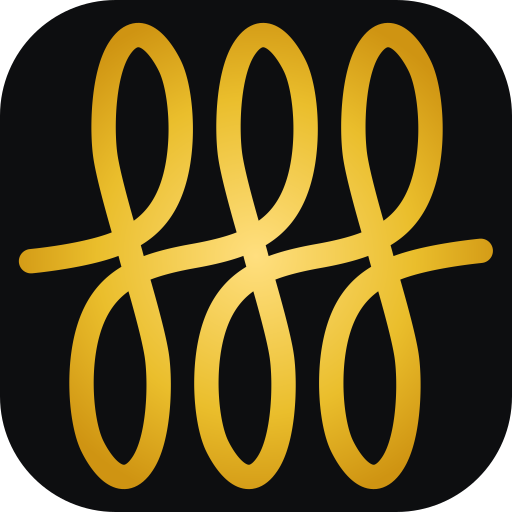
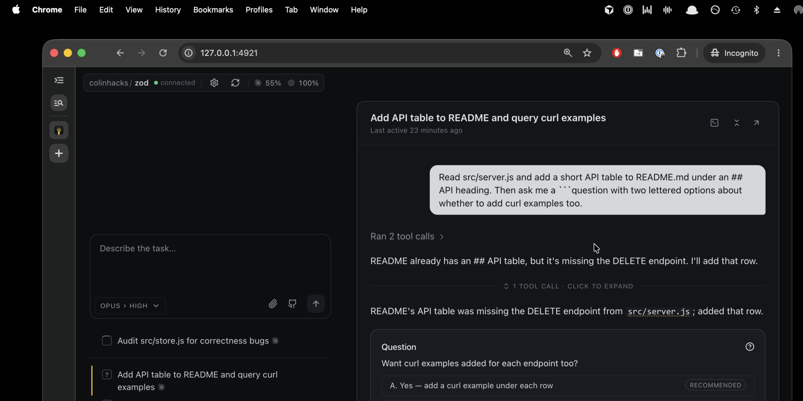

FrizzFrizz runs many Claude Code and Codex agents at once. When one needs you, it becomes a card in a single queue — with lettered options and a keystroke to answer.
Threads you are waiting on sit at the top. Everything still running is below. Nothing appears just to be dismissed.

Frizz drives the agents you already pay for, and stores nothing in the cloud.
Reading four panes to find the one that stopped is the problem, not the interface.